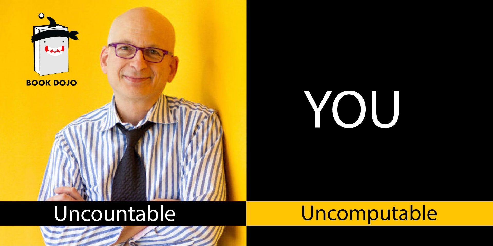
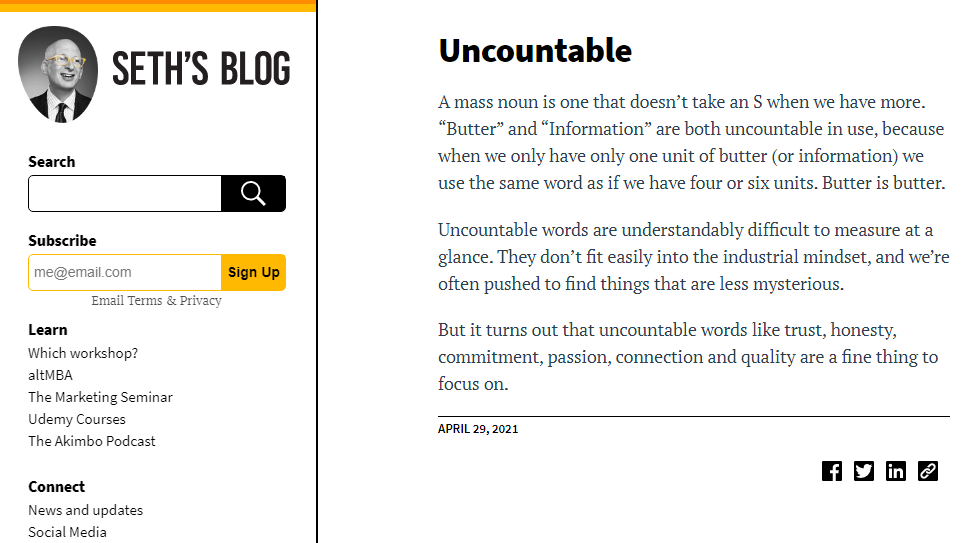
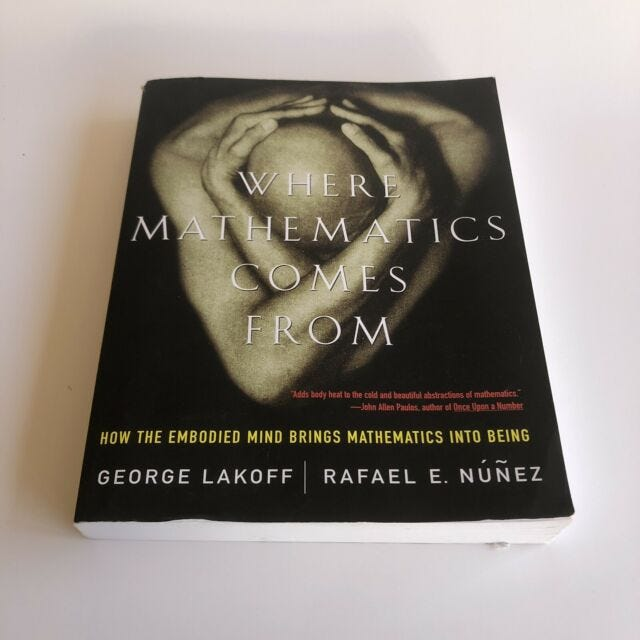

Uncomputable



Is something computable necessarily countable? is counting an algorithm? because the computability theory states that any function that is computable by an algorithm is a computable function.
Computability theory is a major field in computer science and mathematics and there are many like Kurt Gödel, Alonzo Church, Rózsa Péter, Alan Turing, Stephen Kleene, and Emil Post who worked on this field and brought us theories, theorems, and proofs that one can use for designing a decision proxy. This one would be very likely a top executive, a board member, a direct marketer, or MBA folks because these are those who are most obsessed by metrics for taking decisions. Decidability theory is also an important field close to the computability theory. How marketing, business development, and modeling could approach and benefit from these fields is a question worth answering.
As Seth said here, I do think that trust, honesty, commitment, passion, connection, and quality are uncountable words and very likely uncomputable also. All you can do is build a proxy that comprised of one or a set of countable (computable) words that could approximate them. There a whole theory of reducibility of computable and uncomputable set that you can learn and use for that. All of this is about mathematics that used to be the same as philosophy. when dealing with something it can help to know where it comes from. Where mathematics comes from is a very interesting book to read.

Book dojo the mail-only startup building data-driven books and building book-driven platforms for book communities is in its way. If you interested in joining you can use this form and give us your email because Book Dojo is a mail-only startup
book dojo will certainly publish my coming book Gamestop, anatomy of a stock short bubble that you can discover here and get an early reader access.
PS: This article is an experimental article of a coming book-driven platform that will be very likely operated and used by book communities involved in Book Dojo. it is like these experimental articles this, this and this.
this AI tool will be very useful for making it better for YOU.